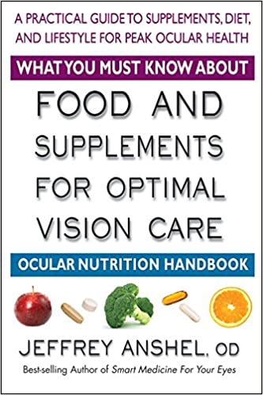
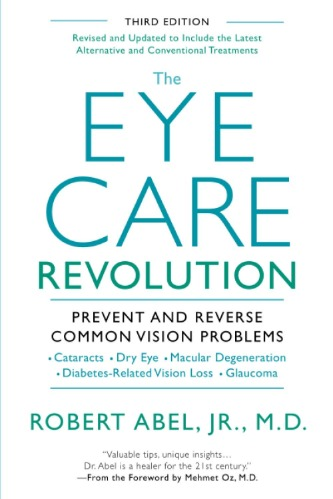

What You Must Know About Food and Supplements for Optimal Vision Care: Ocular Nutrition Handbook
As children, we were told to eat our carrots if we wanted good eyesight. Carrots contain beta-carotene, which the body can convert into vitamin A―a necessary nutrient for optimal vision. For most of us, that’s were our knowledge of vitamins and eye health stops. Over the last twenty years, many studies have demonstrated that certain foods and natural supplements can play a major role in the treatment of eye problems. From the best-selling author of Smart Medicine for Your Eyes comes a new, concise guide to these powerful substances.
What You Must Know About Food and Supplements for Optimal Vision Care is divided into three parts. Part One is an overview of nutritional principles. This section explores the function of nutrients that benefit not only the visual system but also the entire body. Part Two provides a list of common eye disorders and includes a brief discussion of each condition, supplying handy charts that detail the nutritional, herbal, and homeopathic treatments that may be used to alleviate each disorder. Part Three offers further guidance by presenting dietary approaches to eye health and providing important information on the interaction of various foods and medications.
There is so much you can do to support eye health through good food and wisely chosen supplements. In this helpful and easy-to-use resource, Dr. Anshel provides you with a wealth of information on the most effective natural products and foods available to promote optimal vision.

The Eye Care Revolution: Prevent And Reverse Common Vision Problems, Revised And Updated
"Valuable tips, unique insights. . .Dr. Abel is a healer for the 21st century." — From the Foreword by Mehmet Oz, M.D.
Alzheimer's can be predicted through the eye? Sleep apnea can cause blindness? Computers and texting are creating an epidemic of nearsightedness? Retina chips and stem cell therapy offer promise for macular degeneration patients? Your prescription drugs can give you cataracts. . .or glaucoma?
Alternative therapies have created new vistas for hope in eye care. In this breakthrough guide--newly revised and updated--ophthalmologist Dr. Robert Abel brings you amazing nutritional, herbal, homeopathic, and Asian therapies, along with conventional methods, to prevent and even reverse most vision disorders.
Covering everything from high-tech laser treatments to centuries-old Asian remedies, Dr. Abel's authoritative, reliable information will help you and your doctor become full partners in saving your eyes and your overall good health.
"If you have an eye condition, ask your ophthalmologist how he will treat you. Then pick up Dr. Abel's book and note how many more answers he gives. I can vouch for the fact that the options he offers, being natural and nutritional, are far better." —Robert C. Atkins, M.D.